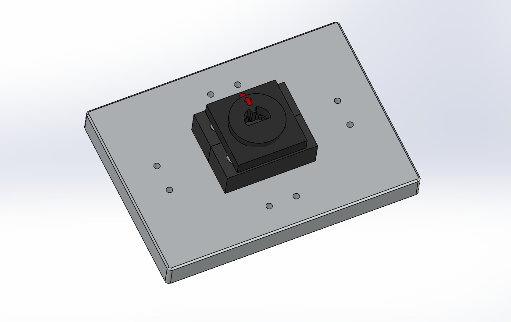
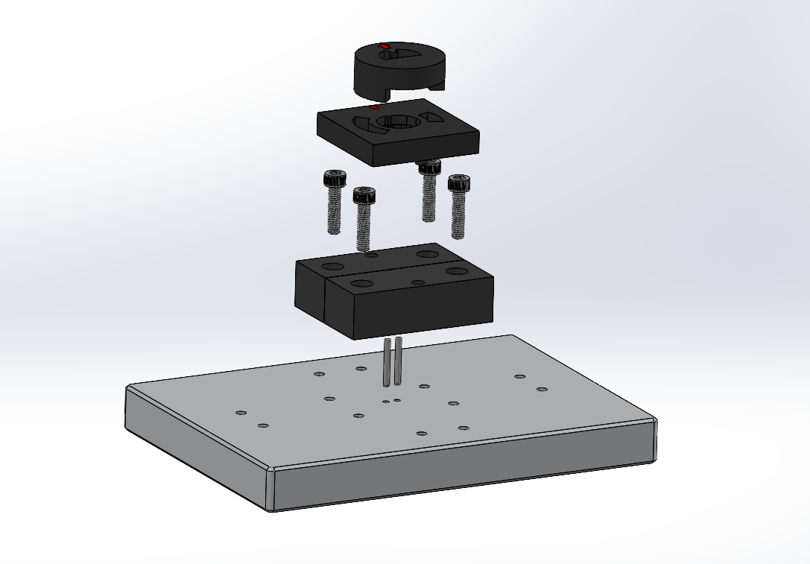
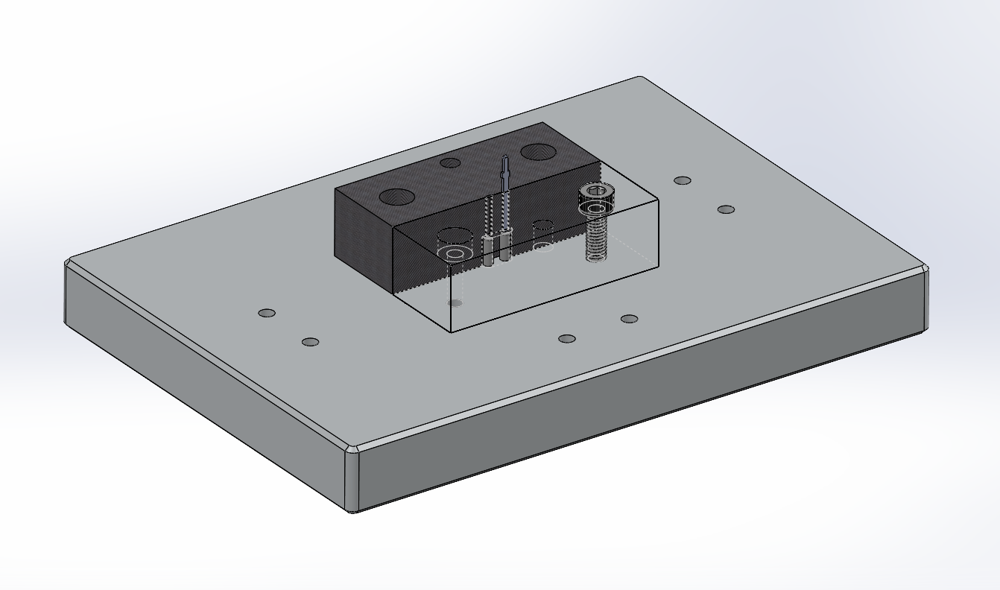
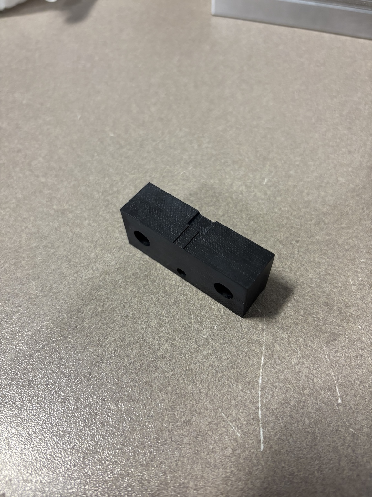
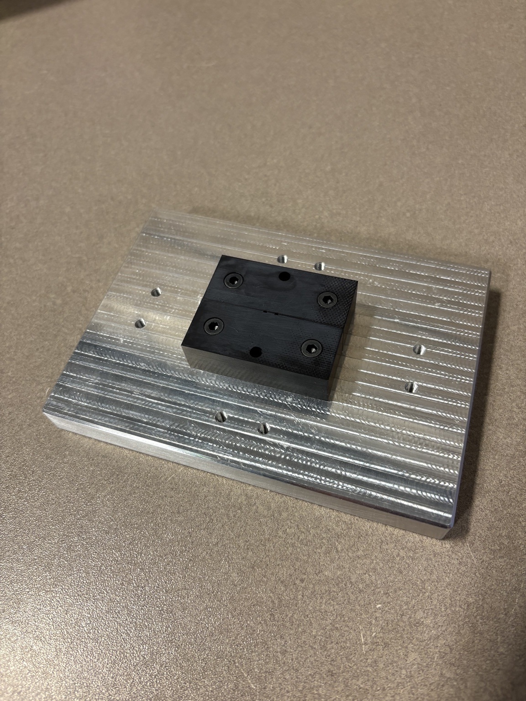
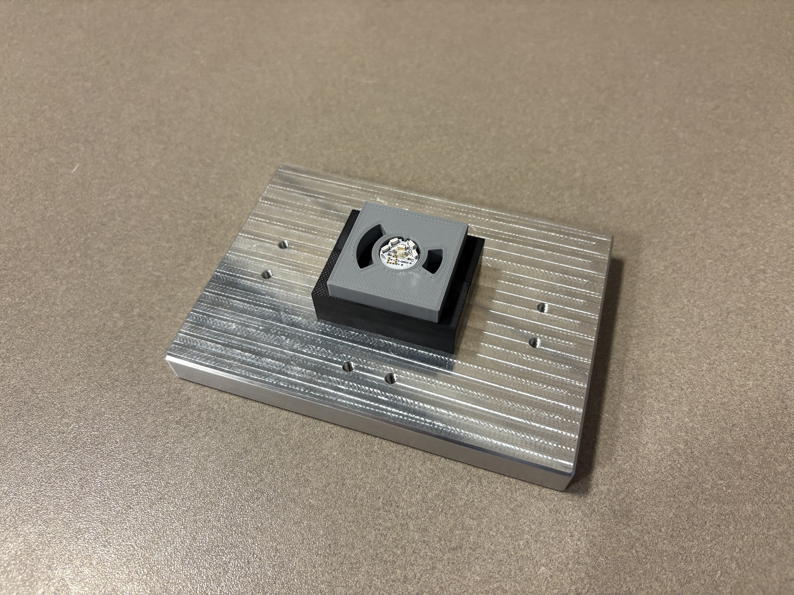

Fixture Design • Material Selection • Production Tooling
Production Soldering Fixture Design
Designed a production fixture used to locate a small electronic assembly and its pins during soldering after the previous tooling degraded under repeated exposure to heat.


01
Problem
The existing production fixture was repeatedly exposed to heat during pin soldering and was beginning to melt and deform. Because the tooling establishes the relationship between the board and the pins, continued degradation could reduce consistency and shorten fixture life.
The replacement needed to maintain reliable board and pin location, remain accessible to the technician during soldering, and use materials better suited to repeated production use.
02
Fixture Design
I redesigned the tooling as a multi-material assembly built around a rigid machined aluminum base. Two rectangular G11 components form the fixture body around the critical pin and soldering region, while the upper locating components are 3D printed.
The printed components locate the board onto the pins and hold it in the correct position while the technician completes the soldering operation. This separates the locating, thermal, and structural functions between components instead of relying on a single fixture material.

03
Critical Location
The central fixture geometry controls the relationship between the board and the solder pins. The G11 components support the critical region, while the printed upper pieces guide the board onto the pins and retain it during the soldering operation.
I used the CAD assembly to verify component clearances, pin location, fastener placement, and access around the soldering area before releasing the machined parts.

04
Materials & Manufacturing
The aluminum base provides a rigid and durable foundation for repeated production use. G11 glass-epoxy laminate was used for the two rectangular components surrounding the soldering region because of its thermal resistance and electrical-insulating properties.
The board-locating components were 3D printed, allowing those geometrically specific pieces to be produced and revised quickly. I created the mechanical design and engineering documentation, and machined components were produced by outside suppliers before final assembly.


05
In Use
During use, the board is positioned onto the solder pins by the lower printed locator. The round upper component then locates and holds the board in position while leaving the required region accessible to the technician.
The result is a repeatable setup that establishes board-to-pin position before soldering while keeping the production workflow straightforward.

06
Result
The redesign replaced heat-sensitive production tooling with a fixture that assigns each major function to a more appropriate component: aluminum for the structural base, G11 around the soldering interface, and 3D-printed parts for board location and retention.
The finished assembly provides repeatable board and pin positioning, improved resistance to repeated soldering exposure, and straightforward access for the technician during production.